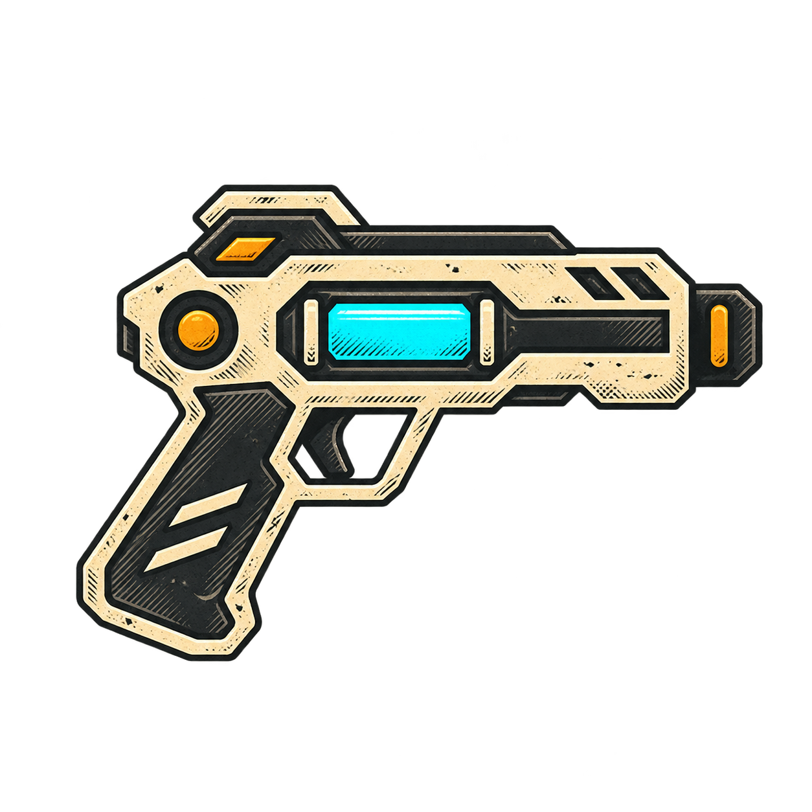

ATELIER / DIRECTION ARTISTIQUE
CHOISIS LES
ICÔNES DU JEU.
Le style gravé du blaster est retenu. Pour chaque autre arme et gadget, compare deux dessins dans cette même direction et sélectionne celui que tu préfères.
01 STYLE VALIDÉ09 ÉLÉMENTS À CHOISIR02 PROPOSITIONS CHACUN

RÉFÉRENCE / STYLE 04
LE BLASTER
DONNE LE TON.
Contours noirs marqués, crème patiné, graphite hachuré et touches cyan et ambre. Ce blaster est la référence validée pour le reste de l’arsenal.
STYLE RETENU ✓01—09 / PROPOSITIONS
À TOI DE
TRANCHER.
Saisis ton prénom, puis choisis A ou B pour chaque élément. Tu peux enregistrer tes choix un par un et revenir les modifier.
SON / BLASTER
ET LE SON
DU BLASTER ?
Écoute les trois propositions de tir et enregistre celle que tu préfères.
SONS DU JEU / 09 ACTIONS
ÉCOUTE. VOTE.
CHOISIS LE SON.
Deux versions pour chaque action. Écoute A et B, puis enregistre ton choix. Tu peux revenir le modifier.
CHOIX ENREGISTRÉS
Chargement des choix…